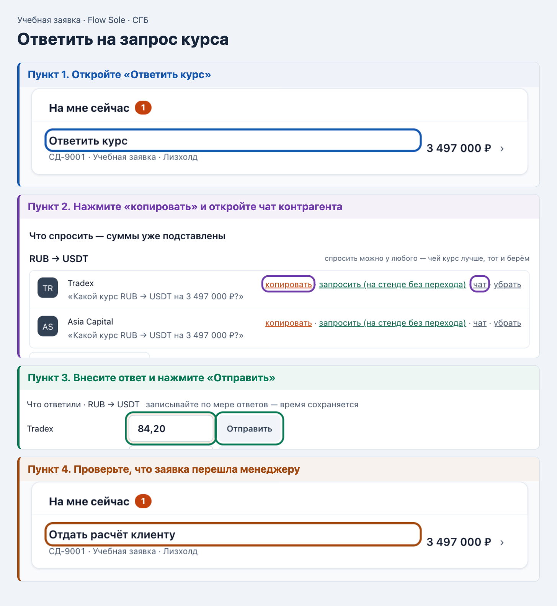
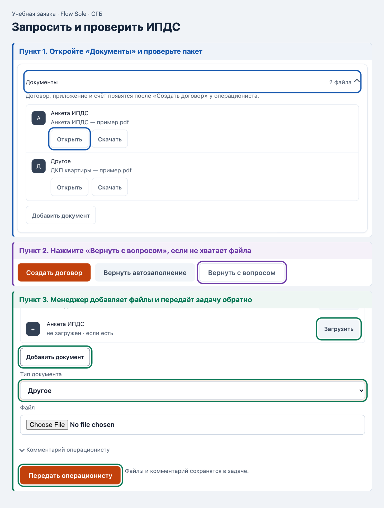
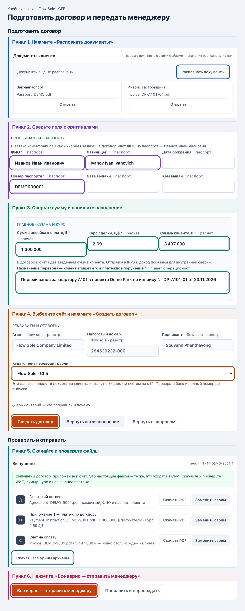
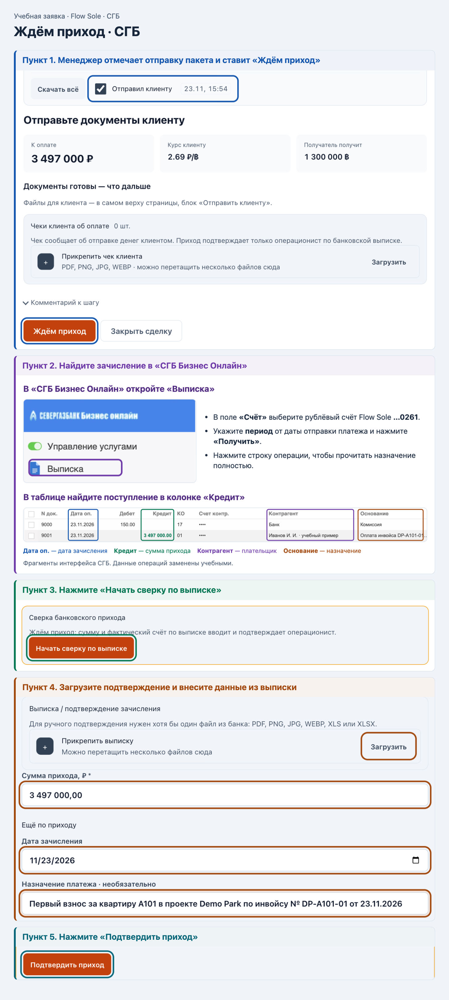
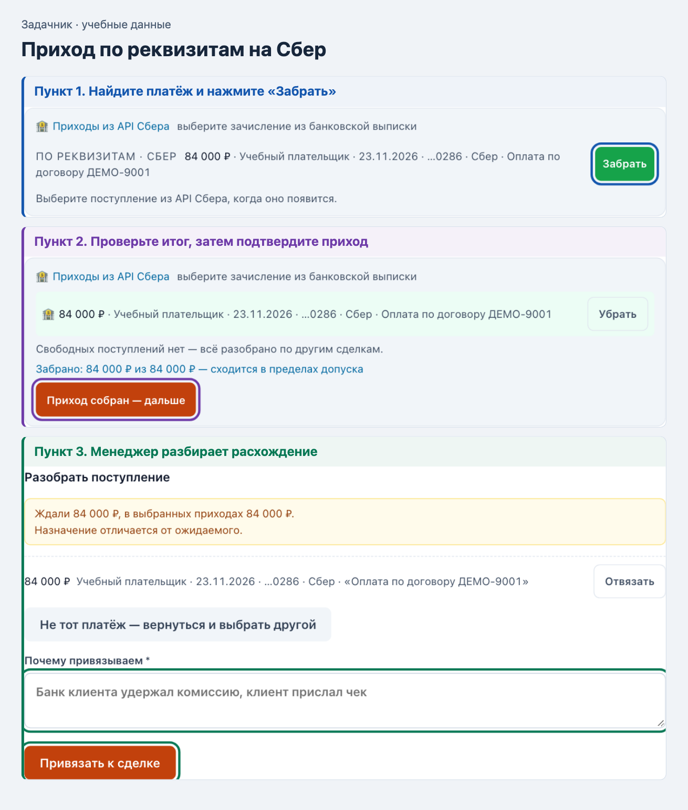
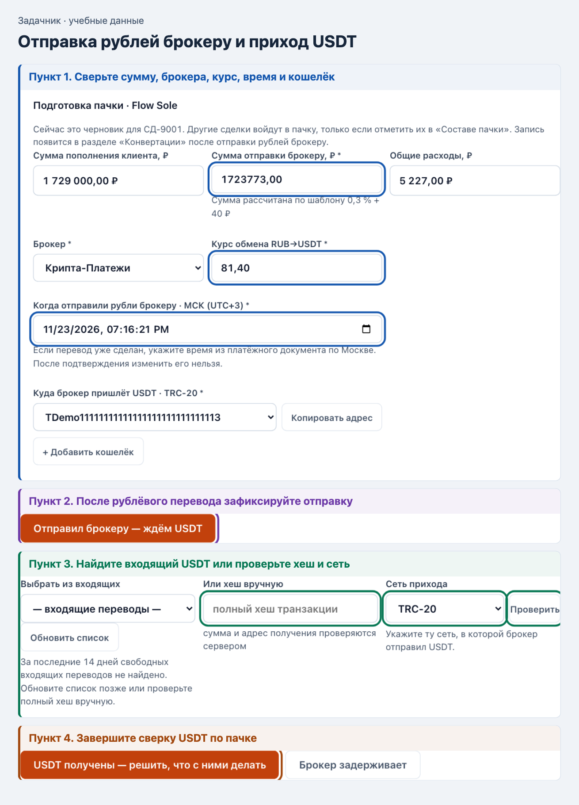
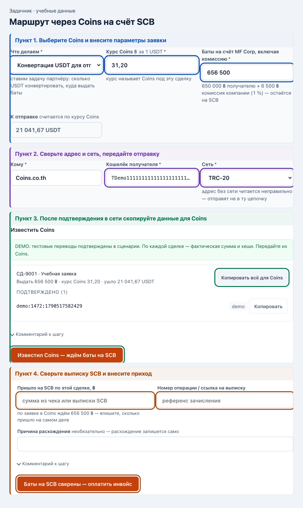
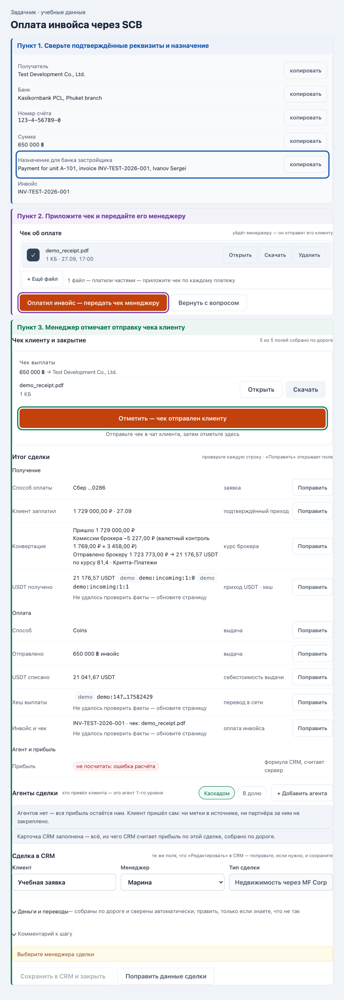
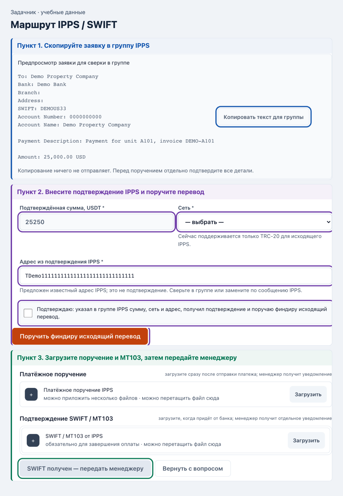
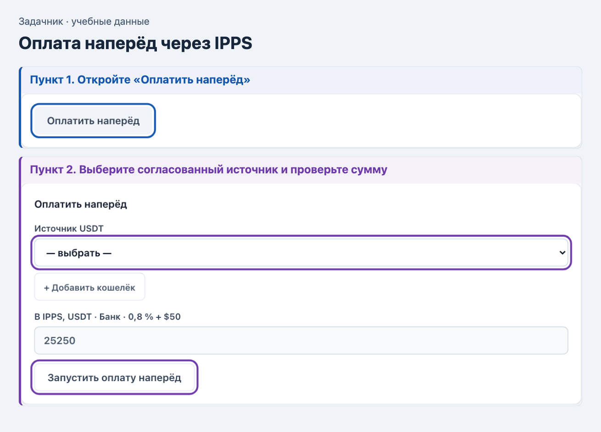

← Задачник · Инструкции для операциониста
Оплата по реквизитам
Сейчас основной маршрут — Flow Sole через СГБ. Для отдельных заявок доступна оплата на счёт MF Corporation в Сбере.
- Куда клиент платит рубли
- Flow Sole · СГБ или MF Corporation · Сбер. Сверьте счёт с выпущенным пакетом.
- Как оплачивается инвойс
- IPPS / SWIFT в USD для фрихолда и авто, если в карточке указан этот маршрут. Coins → SCB для выплат в батах через SCB. Оплату наперёд запускайте после согласования источника.
1. Ответить на запрос курса
Когда клиентский менеджер запрашивает курс, в Задачнике появляется задача «Ответить курс». На экранах показана учебная заявка.

Открыть экран крупнее- Откройте заявку В списке задач нажмите на карточку «Ответить курс».
- Скопируйте и отправьте вопрос
- Что спросить
- Выберите нужное направление. Нажмите «копировать» в строке контрагента. Сумма уже есть в тексте.
- Чат
- В той же строке нажмите «чат», чтобы посмотреть сохранённый адрес. Откройте группу, вставьте вопрос и отправьте его. На стенде кнопка «запросить (на стенде без перехода)» тоже копирует вопрос. Если видите «привязать чат», используйте список ниже или уточните адрес группы.
- RUB → USDT · Grusha (MF)| Tradex, Asia Capital x Grusha (rub-usdt) | АК-1001, Крипта - Платежи (Екатерина).
- USDT → THB · Coins TH | mfcorpthai@gmail.com, Bitazza OTC x MF Corporation Company Limited.
- Внесите курс
- Курс, ₽ за 1 USDT
- В блоке «Что ответили · RUB → USDT» впишите число в строке ответившего контрагента. Например, 84,20. Нажмите «Отправить».
- Курс, ฿ за 1 USDT
- Если в карточке есть «Что ответили · USDT → THB», внесите ответ в нужную строку. Например, 32,05. Нажмите «Отправить».
- Что уйдёт в сделку
- Здесь автоматически появляется лучший из внесённых курсов по каждому направлению.
- Проверьте передачу менеджеру Как только внесён хотя бы один ответ по каждому направлению из карточки, менеджер получит задачу «Отдать расчёт клиенту» и рассчитает итоговый курс.
2. Запросить и проверить ИПДС
ИПДС — документы об источнике происхождения денежных средств. Собирайте их до перевода клиента. Для оплаты недвижимости через Flow Sole СГБ прямо запрашивает ИПДС при сумме от 3 млн ₽. Для оплаты авто, сделок на меньшую сумму и приёма на Сбер проверьте, какой пакет нужен для конкретного платежа. Сообщение СГБ о пакете.

Открыть экран крупнееКакие документы запросить
Зарплата или пенсия
- По зарплате — справка о доходах и суммах налога физлица (бывшая 2-НДФЛ) за прошлый год и доступный период текущего года. По пенсии — справка банка о зачислении пенсии или выписка с пенсионными выплатами.
- Выписка по счёту с зачислениями. Если деньги перевели на другой счёт, приложите выписки по переводу и остаток на счёте, с которого клиент заплатит.
Доход от деятельности ИП
- Декларация за прошлый год по налоговому режиму клиента и книга учёта доходов и расходов (КУДиР) за текущий год до даты платежа, если она ведётся.
- Для СГБ подготовьте справки о принадлежности сумм единого налогового платежа (ЕНП) за прошлый и текущий год, отдельно за каждый год.
- Если клиент перевёл деньги с расчётного счёта ИП на личный, нужны обе выписки. На одной видны доход и списание, на другой — зачисление и остаток.
Продажа недвижимости
- Договор купли-продажи проданного объекта с подписями сторон, выписка ЕГРН и выписка либо платёжное поручение с фактическим зачислением денег продавцу.
- При расчёте через аккредитив, эскроу или сервис безопасных расчётов приложите документ о зачислении денег продавцу.
Продажа автомобиля
- Договор купли-продажи автомобиля с подписями продавца и покупателя. Выписка должна показывать зачисление денег от продажи и их движение до счёта, с которого клиент платит.
- Если расчёт был наличными или продажа была давно, сначала уточните у банка, какие подтверждения он примет. Подготовьте документы на другие источники, если часть суммы подтверждается ими.
Вклад или накопительный счёт
- Документ об открытии вклада или накопительного счёта, выписка с пополнением, начисленными процентами и выводом, выписка со счёта, на который вернулись деньги.
- Если платёж идёт из основной суммы вклада, запросите документы о том, как она сформировалась. Согласуйте комплект с СГБ до перевода.
Платит родственник
- Паспорта покупателя и плательщика, документы о родстве и документы об источнике денег фактического плательщика.
- Для родителя — свидетельство о рождении покупателя. Для супруга — свидетельство о браке. Если платит родитель супруга, приложите свидетельство о рождении супруга и свидетельство о браке. При смене фамилии приложите документ, связывающий фамилии.
- Сверьте с менеджером, как покупатель и плательщик указаны в договоре, и согласуйте схему с банком до перевода.
Несколько источников
- Разбейте сумму по источникам. Например, для платежа на 3,5 млн ₽ клиент берёт 2 млн ₽ от продажи квартиры и 1,5 млн ₽ из дохода ИП. Запросите оба комплекта документов и выписку по счёту оплаты.
- Сверьте зачисления и переводы между счетами. Одну и ту же сумму учитывайте один раз.
Самозанятость, дивиденды, аренда, наследство или дарение
- Спросите, каким документом подтверждается получение денег. Например, справкой о доходах по НПД, решением о выплате дивидендов, договором аренды, свидетельством о праве на наследство или договором дарения.
- Запросите выписку с фактическим поступлением. По такому пакету согласуйте с банком, какие ещё документы приложить. СГБ отдельно указал, что договор займа в качестве ИПДС не принимает. Ответ СГБ по источникам.
Как проверить пакет в Задачнике
- Откройте «Документы» в задаче «Подготовить договор»
- ФИО, подписи и даты
- Сверьте данные фактического плательщика и подписи в документах.
- Сумма по источникам
- Сложите суммы, подтверждённые документами. Они должны покрыть платёж.
- Выписки
- Проследите путь денег от поступления через промежуточные счета и вклады до актуального остатка на счёте оплаты.
- Верните неполный пакет Нажмите «Вернуть с вопросом».
- Чего не хватает, чтобы сделать шаг?
- Укажите конкретный документ, нужный счёт и период выписки.
- Проверьте новые файлы, когда задача вернётся Менеджер добавляет файлы на этапе «Сбор документов».
- Анкета ИПДС
- Менеджер нажимает «Загрузить» в строке анкеты, если она есть.
- Тип документа
- Для выписок, справок и документов об источнике менеджер нажимает «Добавить документ» и выбирает «Другое».
Если источники смешанные, плательщик отличается от покупателя или движение денег нельзя проследить по выпискам, уточните у банка, достаточно ли пакета, в рабочем чате «СГБ- Флоу Соле».
3. Подготовить договор и передать менеджеру
Когда менеджер приложил документы и передал заявку, откройте задачу «Подготовить договор». Ниже порядок для оплаты через Flow Sole. Если по сделке нужен ИПДС, сначала проверьте пакет по предыдущему шагу.

Открыть экран крупнее- Распознайте документы
- В блоке «Документы клиента» нажмите «Распознать документы» и дождитесь результата.
- Если результат уже есть, переходите к сверке. После замены файла нажмите «Распознать заново».
- Сверьте поля и заполните пропуски
- ФИО
- Перенесите полное имя из паспорта.
- Латиницей
- Сверьте написание имени с загранпаспортом.
- Номер паспорта
- Сверьте символы с оригиналом, в том числе ведущие нули.
- Дата рождения, дата выдачи и кем выдан
- Сверьте с паспортом и заполните пропуски по оригиналу.
- Получатель платежа
- Укажите того, кто указан получателем в инвойсе. Сверьте написание.
- Номер и дата инвойса
- Перенесите данные из инвойса, который оплачивает клиент.
- Недвижимость
- Сверьте объект, номер юнита и форму владения.
- Авто
- Сверьте продавца, ДКП, VIN и этап оплаты. Если VIN ещё нет, укажите основание из документов.
- Проверьте расчёт и напишите назначение
- Сумма инвойса к оплате
- Укажите сумму и валюту текущего платежа. Если платёж частичный, сверьте, какой взнос оформляется.
- Курс сделки
- Сверьте с курсом, который менеджер согласовал с клиентом.
- Сумма клиенту, ₽
- Сверьте рублёвую сумму с расчётом менеджера.
- Назначение перевода
- Сформулируйте по-русски, за что платит клиент. Перенесите номер и дату инвойса, название объекта и номер юнита, если они указаны. Названия и номера пишите как в оригинале.
- Проверьте счёт и выпустите пакет
- Куда клиент переводит рубли
- Выберите «Flow Sole · СГБ». Если в заявке указан Сбер, выберите «Сбер · реквизиты MF Corporation».
- Агент
- Задачник подставляет компанию по выбранному счёту. Для СГБ это Flow Sole Company Limited.
- Налоговый или регистрационный номер
- Сверьте номер компании, которую подставил Задачник.
- Подписант
- Проверьте, что подставленный подписант указан для выбранного агента.
- Откройте и проверьте файлы
- На этапе «Проверить и отправить» скачайте файлы по отдельности или нажмите «Скачать всё одним архивом».
- В новом пакете будут договор, приложение и счёт. Если Задачник нашёл действующий договор для этого клиента и маршрута, будут допсоглашение и счёт.
- В самих файлах сверьте ФИО, агента, получателя, сумму, курс, реквизиты и назначение. Номер договора или инвойса в назначении должен совпасть с оригиналом.
- Передайте пакет менеджеру
- Если нашли ошибку, нажмите «Поправить и пересоздать», исправьте поля и проверьте новый выпуск.
- Когда всё сверено, нажмите «Всё верно — отправить менеджеру». У менеджера появится задача «Отправить клиенту».
Счёт изменился после выпуска пакета
Если клиент ещё не перевёл рубли и в карточке доступно «Перевыпустить пакет», откройте эту форму. Выберите согласованный счёт в поле «Куда клиент переводит рубли». При смене счёта курс и сумма сохраняются. Выпустите и скачайте новый комплект. Сверьте агента, счёт и итоговое назначение в новых файлах. Передайте менеджеру актуальный пакет и попросите использовать его для оплаты. Если деньги уже пришли, действуйте по выписке и разберите фактическое зачисление вместе с менеджером.
Оплата части инвойса
Укажите именно текущий взнос и тот инвойс или график платежей, который его подтверждает. В назначении можно указать номер взноса, объект и номер инвойса. Сумму взноса и дату платежа сверяет менеджер. Каждый полученный чек прикладывайте к тому платежу, к которому он относится.
4. Ждём приход на счёт Flow Sole в СГБ
Операционист сверяет зачисление по выписке СГБ и вручную подтверждает его в Задачнике. Чек клиента помогает найти операцию. Факт зачисления проверяйте в выписке по нашему счёту.

Открыть экран крупнее- Откройте задачу «Ждём приход» После отправки договора, счёта и реквизитов клиенту менеджер ставит отметку «Отправил клиенту» и нажимает «Ждём приход». У операциониста появляется задача по этому платежу. Если клиент прислал чек, он будет в блоке «Чеки клиента об оплате», когда его приложат к заявке.
- Найдите зачисление в СГБ
- В СГБ Бизнес Онлайн нажмите «Выписка» в левом меню.
- В поле «Счёт» проверьте, что выбран рублёвый счёт Flow Sole …0261. В «Период» укажите даты от отправки платежа и нажмите «Получить».
- В таблице найдите сумму в колонке «Кредит». Сверьте плательщика и нажмите строку операции, чтобы прочитать назначение целиком. Клиент-Банк СГБ · Раздел «Выписка» в руководстве iBank.
- Дата оп.
- Дата зачисления, которую нужно перенести в Задачник.
- Кредит
- Фактическая сумма прихода до копеек. Сверьте с полем «Ждём сумму» в карточке.
- Контрагент
- Сверьте плательщика с заявкой. Если платит родственник, проверьте, что его участие согласовано.
- Основание
- Назначение платежа. Сверьте с договором или инвойсом. Если текст отличается, сохраните фактическое назначение и разберите расхождение.
- Начните сверку по выписке Когда нашли зачисление, откройте блок «Сверка банковского прихода» и нажмите «Начать сверку по выписке». Задачник откроет форму ручного прихода.
- Приложите выписку и заполните поля
- Выписка / подтверждение зачисления
- Нажмите «Загрузить». Приложите выписку или скрин операции из СГБ, где видны счёт, сумма, плательщик и назначение.
- Сумма прихода, ₽
- Введите сумму строки зачисления до копеек. Если комиссия банка отражена отдельным списанием, укажите сумму зачисления целиком.
- Ещё по приходу → Дата зачисления
- Поставьте дату из выписки. Поле может быть заполнено сегодняшней датой.
- Ещё по приходу → Назначение платежа
- Перенесите текст из строки зачисления, чтобы Задачник мог сравнить его с ожидаемым.
- Пришло на другой счёт
- Используйте этот блок, если выписка подтверждает зачисление на другой счёт. Сверьте реквизиты и согласуйте расхождение с менеджером перед подтверждением.
- Подтвердите приход и проверьте статус Когда выписка подтверждает, что это платёж по сделке, нажмите «Подтвердить приход». При совпадении данных Задачник переведёт заявку на «Отправка брокеру для конвертации». Если сумма отличается больше допуска или назначение отличается от ожидаемого, у менеджера появится задача «Разобрать поступление».
Если платёж не найден или данные расходятся
- В выписке пока нет зачисления. Оставьте заявку на «Ждём приход». Уточните у менеджера дату и счёт получателя по чеку. Если перевод отправлен на нужный счёт, уточните статус в чате «СГБ- Флоу Соле».
- Пришла только часть суммы. Сообщите менеджеру, сколько поступило. Если ждёте остаток по той же заявке, дождитесь его или согласуйте с менеджером отдельное оформление частичного платежа.
- Другой плательщик, счёт или назначение. Сохраните банковское подтверждение и сообщите менеджеру, что отличается. Проверьте, что зачисление относится к этой сделке, перед подтверждением.
5. Ждём приход на счёт MF Corporation в Сбере
Откройте «Ждём приход», когда менеджер отправил клиенту пакет со счётом Сбера …0286. Задачник подгружает банковские операции. Если платёж уже привязался, проверьте выбранные поступления перед завершением этапа.

Открыть экран крупнее- Найдите платёж и нажмите «Забрать»
- Ждём сумму и счёт зачисления
- Сверьте ожидаемые данные с выпущенным счётом. По чеку клиента уточните время, плательщика и назначение.
- Приходы из API Сбера
- Сравните сумму, дату, счёт, плательщика и назначение в банковской строке. Нажмите «Забрать» у найденной операции. Если переводили несколькими частями, привяжите каждую отдельно.
- Проверьте итог, затем подтвердите приход В строке «Забрано» проверьте полную сумму. Если взяли чужую операцию, нажмите «Убрать» рядом с ней. Когда приход собран, нажмите «Приход собран — дальше». При совпадении данных рублёвая заявка перейдёт на конвертацию.
- Передайте расхождение менеджеру Если сумма, счёт или назначение расходятся, у менеджера появится «Разобрать поступление». Укажите в комментарии, что совпало и что отличается. Менеджер проверит принадлежность платежа, заполнит «Почему привязываем» или вернёт заявку к выбору операций.
Нет строки в API Сбера
Проверьте вкладку «Поступления», выпущенный счёт и чек клиента. Если нужна сверка, запросите у коллеги с доступом выписку Сбера. Оставьте «Ждём приход», пока не сможете связать банковское зачисление со сделкой. Если выписка показывает другой счёт, согласуйте расхождение с менеджером и используйте ручную сверку по выписке.
Плательщик прислал чек, но в выписке другая сумма
Зафиксируйте сумму из выписки и причину, если она известна. Если клиент отправит остаток, оставьте этап ожидания и привяжите вторую операцию после зачисления. Если менеджер подтвердил окончательную частичную оплату, разберите сумму с ним до отправки брокеру.
6. Отправить рубли брокеру и сверить приход USDT
После подтверждения рублей откройте «Отправка брокеру для конвертации». Для СГБ и Сбера экран подготовки одинаков по назначению. Счёт в заголовке, состав пачки и сумма отправки зависят от фактического прихода.

Открыть экран крупнее- Заполните «Подготовка пачки»
- Состав пачки
- По умолчанию выбрана текущая сделка. Добавляйте другие подтверждённые поступления с этого счёта, только если они входят в тот же перевод брокеру. Перед отправкой проверьте весь состав.
- Сумма пополнения клиента и сумма отправки брокеру, ₽
- Первая показывает приход, вторая — сколько фактически уйдёт брокеру. Откройте «Расчёт отправки» и проверьте удержания для данного счёта. Если вводите вручную, перенесите фактическую сумму исходящего платежа.
- Брокер и курс обмена RUB→USDT
- Выберите согласованного брокера, проверьте его реквизиты в рабочей группе и укажите подтверждённый им курс в рублях за USDT.
- Когда отправили рубли брокеру
- Запишите фактические дату и время отправки по МСК. Эти данные помогают найти ответный перевод.
- Куда брокер пришлёт USDT · TRC-20
- Выберите согласованный корпоративный кошелёк. Сверьте полный адрес и сеть с данными, переданными брокеру.
- Зафиксируйте отправку рублей После фактического рублёвого перевода и сверки полей нажмите «Отправил брокеру — ждём USDT». Задача перейдёт на «Ждём USDT от брокера». Если у вас нет доступа к исходящему переводу, получите подтверждение ответственного и перенесите данные из него.
- Сверьте входящий перевод USDT
- Выбрать из входящих
- Найдите перевод на кошелёк пачки и проверьте сумму, отправителя, время и свободный остаток.
- Или хеш вручную · Сеть прихода
- Вставьте полный хеш, выберите фактическую сеть и нажмите «Проверить». Дождитесь результата проверки суммы и адреса.
- Доля перевода
- Если хеш относится к нескольким пачкам, засчитайте только долю этой пачки. Если брокер разбил отправку, добавьте каждый проверенный перевод отдельно.
- Завершите сверку USDT по пачке Когда все нужные части получены, нажмите «USDT получены — решить, что с ними делать». По предоплате кнопка называется «USDT получены — завершить конвертацию». При расхождении уточните у брокера, будет ли остаток, и согласуйте с ответственным фактическую сумму к зачёту.
7. Конвертировать через Coins и сверить баты на SCB
На «Что делаем с USDT» выберите этот маршрут, когда по сделке согласовано получить THB на счёт MF Corporation в SCB. Для нескольких сделок в пачке заполните назначение каждой.

Открыть экран крупнее- Внесите параметры обмена
- Что делаем
- Выберите вариант Coins для получения батов.
- Курс Coins
- Запросите курс на текущую сумму в чате Coins TH | mfcorpthai@gmail.com. Введите подтверждённое количество батов за 1 USDT.
- Баты на счёт MF Corp, включая комиссию
- Сверьте сумму получателю и комиссию компании по заявке. В поле «К отправке» Задачник рассчитает USDT. Сверьте расчёт с подтверждением Coins и с доступной долей сделки.
- Сверьте адрес и сеть, передайте отправку Проверьте поля «Кому», «Кошелёк получателя» и «Сеть» по подтверждению Coins. Нажмите кнопку передачи, которую показывает Задачник. По корпоративному кошельку работают исполнители и подписанты из правил кошелька. Для личного кошелька перевод выполняет владелец.
- Отправьте данные Coins после подтверждения перевода Дождитесь проверенного хеша. На этапе «Известить Coins» нажмите «Копировать всё для Coins» по нужной сделке. Вставьте текст в рабочую группу Coins. Проверьте адреса, сеть, все относящиеся к сделке хеши, сумму и счёт выдачи. После отправки сообщения нажмите «Известил Coins — ждём баты на SCB».
- Сверьте выписку SCB и внесите приход
- Пришло на SCB по этой сделке, ฿
- Перенесите сумму фактического зачисления на SCB, подтверждённую выпиской.
- Номер операции / ссылка на выписку
- Укажите референс зачисления. Для общей выплаты Coins проверьте долю, относящуюся к сделке.
- Причина расхождения
- Если факт отличается от ожидаемого, запросите разбивку у Coins и запишите причину, когда она подтверждена.
8. Оплатить инвойс со счёта SCB и передать чек

Открыть экран крупнее- Сверьте подтверждённые реквизиты и назначение В «Оплатить инвойс получателю» сверьте получателя, банк, счёт, сумму THB, инвойс и «Назначение для банка застройщика». Это назначение для выплаты получателю. Менеджер заполняет его в реквизитах и нажимает «Реквизиты верны — можно платить». Если поле пустое, назначение отличается от инвойса или реквизиты изменились, используйте «Вернуть с вопросом» и дождитесь подтверждения.
- Приложите банковский чек и передайте менеджеру После фактической выплаты со счёта SCB · MF Corp откройте «Чек об оплате», нажмите «Загрузить» и приложите подтверждение. Если выплата разбита, приложите все чеки. Нажмите «Оплатил инвойс — передать чек менеджеру».
- Проверьте передачу на закрытие У менеджера появится «Закрытие сделки». Он проверяет документы выплаты, отправляет чек клиенту, отмечает отправку и завершает закрытие в CRM. Если просит исправить документы, вернитесь к задаче по уведомлению.
9. Согласовать заявку IPPS и получить SWIFT / MT103
Этот маршрут используйте для фрихолда и оплаты авто, если заявка оформлена с выплатой через IPPS. Получателю уходят USD. Сумма USDT для IPPS рассчитывается отдельно и зависит от выбранного тарифа.

Открыть экран крупнее- Проверьте реквизиты и отправьте заявку IPPS Дождитесь, пока менеджер подтвердит реквизиты получателя. Сверьте название, банк, SWIFT, счёт, назначение, номер инвойса и сумму, которая должна дойти в USD. Для авто сверьте продавца и основание платежа по инвойсу или ДКП. На «Согласовать заявку IPPS и поручить перевод» нажмите «Копировать текст для группы». Отправьте готовую заявку в IPPS& Grusha (Property Payment). Если для авто менеджер указал другую рабочую группу IPPS, отправьте заявку туда.
- Внесите подтверждение IPPS и поручите перевод
- Подтверждённая сумма, USDT
- Задачник рассчитывает её по инвойсу и тарифу. Если сумма IPPS отличается, уточните условия и дождитесь согласованного расчёта в карточке.
- Сеть и адрес из подтверждения IPPS
- Для этого поручения доступна сеть TRC-20. Перенесите полный адрес из ответа на текущую заявку и сверьте его с полем в задачнике.
- Подтверждение заявки
- После ответа IPPS поставьте галочку, что сумма, сеть и адрес согласованы. Нажмите «Поручить исходящий перевод». В названии кнопки может быть указан финдир или владелец кошелька.
- Загрузите поручение и MT103, затем передайте менеджеру Если сначала открылся «Учёт перевода по ранее согласованной заявке», проверьте хеши и нажмите «Продолжить к учёту MT103». В «Подтверждение от IPPS» приложите платёжное поручение, когда его выдаст IPPS. В блок «Подтверждение SWIFT / MT103» приложите банковский документ, когда получите его. Сверьте сумму, получателя, назначение и референс операции. Нажмите «SWIFT получен — передать менеджеру». Менеджер получит документы для отправки клиенту и закрытия.
10. Оплата наперёд через IPPS
Эта ветка доступна для рублёвого фрихолда после подтверждения прихода рублей, пока USDT от брокера ещё не зачтены. Источник USDT заранее согласуйте с ответственным за средства.

Открыть экран крупнее- Откройте «Оплатить наперёд» На ветке конвертации найдите эту кнопку в заявке. Проверьте инвойс, сумму, тариф IPPS и подтверждение источника. Если кнопки нет, ведите обычную конвертацию и уточните согласование у менеджера.
- Выберите источник и запустите оплату В «Источник USDT» выберите согласованный кошелёк из доступных. Сверьте расчёт «В IPPS, USDT» и нажмите «Запустить оплату наперёд». Завершите отдельную задачу выплаты по инструкции IPPS / SWIFT и продолжайте конвертацию у брокера.
Сверьте USDT брокера и завершите эту ветку по фактическому приходу.
Получите подтверждение IPPS и оформите поручение. Приложите документы выплаты, как только они поступят.
Если поступление брокера уже пришло на кошелёк, с которого оплачивали наперёд, проверьте, что возмещение зачтено. Если кошельки разные, отслеживайте отдельную задачу возмещения и проверку хеша ответственным за неё.
11. Нестандартные ситуации
Курс изменился до отправки рублей брокеру
Попросите менеджера нажать «Запросить курсы заново», если кнопка доступна. Ответьте на новый запрос и проверьте, какие документы нужно перевыпустить. После начала конвертации или исходящего платежа курс зафиксирован в заявке. Согласуйте дальнейшие действия с менеджером.
Брокер прислал на другой кошелёк или в другой сети
Сверьте, что это наш кошелёк и перевод относится именно к этой пачке. Если нужная операция ещё не засчитана, используйте выбор фактического кошелька в «Ждём USDT от брокера». Если ошибочный хеш уже засчитан, отвяжите его с указанием причины до начала исходящего перевода. Проверьте новый хеш и сеть перед тем, как завершить этап.
Отправка с кошелька не подтверждается
Откройте «Проверить перевод» или «Проверить отправку», если такая задача появилась. Сверьте хеш, сеть, источник, адрес назначения, сумму и факт зачисления. При недостаточной сумме проверьте, ожидается ли второй перевод. Перед повторной отправкой убедитесь с владельцем кошелька, что исходная транзакция не прошла.
Баты уже есть на согласованном балансе
В «Что делаем с USDT» выберите фактически согласованный источник выплаты. Для лизхолда с оплатой батами из IPPS выберите «Платим батами с баланса IPPS». В поле «Возврат USDT» укажите, нужно ли вернуть USDT на кошелёк пополнения. Если возврат нужен, сверьте сумму, сеть и кошелёк с ответственным перед передачей. Если возврат не нужен, подтвердите маршрут, проконтролируйте выплату в батах и приложите подтверждение к сделке.
Получатель обновил реквизиты после согласования
Сверьте новый документ с менеджером. Попросите обновить реквизиты и подтвердить их повторно. Если поручение уже выставлено, проверьте статус с владельцем кошелька и провайдером выплаты до выпуска нового поручения.
Закрытие остановилось, а выплата уже выполнена
Проверьте, загружены ли все чеки или MT103, указана ли фактическая сумма и есть ли в журнале подтверждение менеджера по актуальным реквизитам. Передайте ему ссылку на карточку и сообщите, какой документ доступен. При оплате наперёд также проверьте статус конвертации и возмещения.